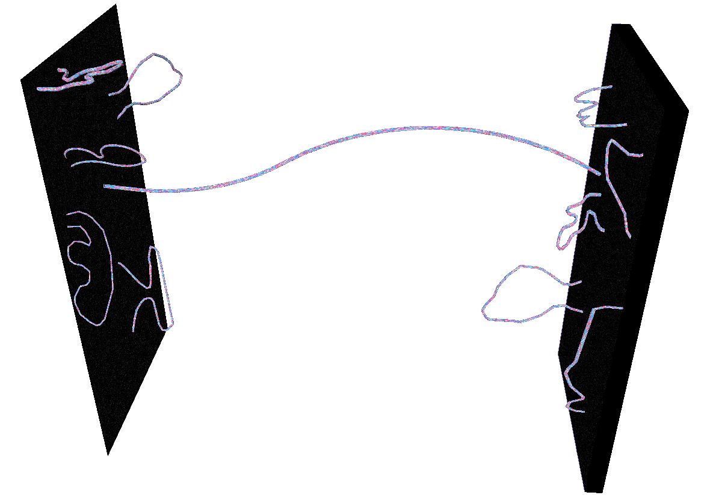

Introduction
This is an expanded version of my talk @ SciPy 2016.
I am a postdoc studying string theory at Rutgers University. Here I want to share with you my experience of using Python in my research project. As a teaser, let me show you the end-product of the project, loom, whose web UI can be found at http://chan.physics.rutgers.edu/loom.
Here you can see many colorful plots produced for real research, and you can generate your own plot by first going to the configuration page, inputting a few parameters, and then click ‘generate.’ Now you see loom working hard, and like a food network show, let me show you a prepared plot instead of waiting for a while, and here is one nice colorful plot.
Goal
My goal is to illustrate how Python is integrated throughout the progress of this project
- to Python programmers and developers who want to know how a math-oriented theoretical physicist use Python, and
- to scientists who are interested in using Python but have difficulty in figuring out where and how to start
as a case study of a collaborative research project using Python.
Crash course: string theory
What is string theory?
So, let me start by telling you what a string theory is.
More commonly known as theoretical particle physics, high-energy theory is a study to understand the fundamental forces of the universe, and you may have heard of the four: electromagnetic force, weak force, strong force, and gravity.
String theory is part of high energy theory. It started as a candidate theory of quantum gravity, and now it’s evolved into a field of study to build a physical and mathematical framework to describe the fundamental forces in a unified way.
Why computational analysis in string theory?
Then why are string theorists interested in computational analysis in tackling questions of mathematical nature?
Indeed string theorists want to find a mathematical and exact result.
However, such a beautiful moment that we have a concise and exact formula for a question rarely happens because many problems in string theory pose significant challenges to a traditional pen-and-paper approach.
We tackle such a problem by using computational method, which gives us hints toward the formulation of a complete answer.
Also it's largely thanks to the recent progress of both hardwares and mathematical software packages that enabled us to physical and mathematical problems by combining analytic and numerical methods together.
String theory and M-theory
Then let me introduce a few concepts from string theory that will appear in this post.
The first one is M-theory, which is sometimes called the mother of all string theories, because various string theories are believed to be different limits of M-theory.
M-theory is a prospective theory of quantum gravity that lives in an 11-dimensional spacetime, that is a ten-dimensional space plus one time direction. 10-dimensional string theories and 11-dimensional supergravity are believed to be different limits of M-theory.
Then we usually wrap this eleven-dimensional theory onto a very small seven-dimensional space, so that we can obtain a four-dimensional spacetime that we live in.
M-branes
M-theory has a higher-dimensional analogue of electromagnetic field.
M-theory has two kinds of extended objects, called M2-branes and M5-branes, that couple to the field electrically and magnetically, respectively. They are the main characters of this story.
An Mp-brane spans a (p+1)-dimensional spacetime. That is, M2-brane spans 2 spatial direction and one time direction, hence the name M2, and M5-brane spans 5 spatial directions and one time direction.
They saturate an inequality called Bogomolny-Prasad-Sommerfield (BPS) bound,
where \(M\) is the mass and \(Z\) is a conserved quantity called a central charge of the object, which is an analogue of electric and magnetic charges. Therefore each M-brane has a mass tied to the central charge.
Supersymmetric gauge theory from M5-branes
What we are going to do with those M-branes is we wrap them on a two-dimensional surface, more precisely a Riemann surface with punctures.
When we wrap \(N\) M5-branes on a punctured Riemann surface \(C\), we obtain a 4d superysymmetric gauge theory, more precisely \(\mathcal{N}=2\) \(\mathrm{SU}(N)\) theory of class \(S\). [1] [2]
In the Coulomb branch of a class \(S\) theory, the M5-branes merge into a single M5-brane wrapping a surface \(\Sigma\),
\begin{align} f(z, x)=0,\ z \in C, \label{eq:SW_curve} \end{align}which is a multi-sheeted cover \(\{ x_{i = 1, \ldots, N} \}\) over \(C\).
When we wrap an M5-brane on such a surface, more precisely a complex 1-dimensional curve, which is called a Seiberg-Witten curve, the remaining four-dimensional spacetime that comes from a high-level math of six minus two equals 4, becomes populated with a supersymmetric gauge theory, which you can imagine as a mathematical model of the real world particle physics.
\(\Sigma\) determines the low-energy physics of the theory. [Seiberg-Witten_1994]
A nice thing is that the geometry of the Riemann surface determines the four-dimensional physics. This is one example of the interplay between physics and geometry in string theory.
Supersymmetric particles from M2-branes
So we got a theory, but what about particles living in the theory?
A supersymmetric particle comes from an M2-brane whose boundary ends along a closed curve \(\gamma \in H_1(\Sigma; \mathbb{Z})\) on the two-dimensional Riemann surface \(Sigma\). [Henningson-Yi_1997] [Mikhailov_1997]
Then the mass of the particle is given by integrating a differential 1-form \(\lambda = x\, \mathrm{d} z\), called Seiberg-Witten differential, along \(\gamma\),
and its charges are determined again from the geometry.
Spectral network
Thanks to supersymmetry, the boundary of such an M2-brane satisfies a differential equation,
\begin{align} \frac{\partial}{\partial t} \left( \lambda_{j} - \lambda_{k} \right)= \left( x_j(z) - x_k(z) \right) \frac{\partial z}{\partial t} = e^{i \theta},\label{eq:class_S_diff_eq} \end{align}where \(t\) is a real parameter along \(\gamma\), \(\lambda_i = x_i\, \mathrm{d}z\) is the value of \(\lambda\) on the \(i\)-th sheet, and \(\theta= \arg(Z)\). [Klemm-Lerche-Mayr-Vafa-Warner_1996]
Then we can reverse the question, such that we first find the solutions of the differential equation on the Riemann surface and then find particles out of the geometric flows. This is the idea of spectral network.
Extending the previous construction, we consider a set of curves on \(C\) that are the solutions of (\(\ref{eq:class_S_diff_eq}\)) for a fixed \(\theta\), which is called a spectral network of the class \(\mathcal{S}\) theory determined by \(f(z, x)\). [Gaiotto-Moore-Neitzke_2012]
Spectroscopy we learned at high school
So what can we do by finding particles of a theory? We are going to do supersymmetric spectroscopy!
First let me remind you what we learned in a high-school science class about spectroscopy. When we put a small amout of chemical compound into a torch we see a flame, and its color tells us about an atomic element in the compound. This is flame test, a qualitative method to identify an element.

Cu

Na
More quantitatively we can use a diffraction grating to the light of the flame to obtain an emission spectrum to identify an atomic element.

Cu

Na
Supersymmetric spectroscopy via spectral network

spectral network

particles
central charges
The idea is the same: we obtain a spectrum of supersymmetric particles, then using the spectrum we try to identify what the theory that has such a spectrum is.
Using spectral networks, we can find the particle spectrum of a given supersymmetric theory. More precisely, we find two-way streets of finite \(\mathcal{S}\)-walls corresponding to BPS states, thereby obtaining the BPS spectrum of a 4d \(\mathcal{N} = 2\) theory of class \(\mathcal{S}\) on the Coulomb branch.
We use the spectrum to identify what the theory is, which is useful when the theory is strongly coupled and we lack any perturbative method to understand it.
Examples of spectral networks from loom
In practice, we generate a familiy of colorful networks called spectral networks, stare it until we spot a particle, do some taxonomy of them until we claim a victory.
From a physics problem to a computational task
OK, enough of physics, now let me describe in detail what exactly the computational problem we want to solve. Every step that I describe here needs to be done using computer and is done by using various Python libraries.
First a technical detail is we first wrap the Riemann surface on another Riemann surface, in this case a complex plane that has the same topology as a sphere with punctures. Then there are branch points and cuts on the \(z\)-plane, which can be found by solving the equation for the Riemann surface \(f(x, z) = 0\).
Then from a branch point we draw a curve called an \(\mathcal{S}\)-wall, which is a flow determined by the previous differential equation (\(\ref{eq:class_S_diff_eq}\)). Then we draw another one, and so on.
There can be an intersection between two curves, and when they satisfy a certain mathematical condition, and for math aficionados the condition is that the roots of the curves sum up to another root of the Lie algebra associated with the theory, there is another curve coming out of the intersection that flows according to (\(\ref{eq:class_S_diff_eq}\)).
And we repeat the procedure of finding intersections among the previous and the newly grown curves up to a desired number of iterations. The set of curves obtained this way is called a spectral network \(\mathcal{W}_\theta\) at a fixed value of \(\theta\), which is a parameter of the differential equation (\(\ref{eq:class_S_diff_eq}\)).
Now we generate a family of spectral networks for various values of \(\theta\) between \(0\) and \(\pi\), and look for a topological change of the networks by studying the evolution of the spectral networks as we change \(\theta\).
For a certain value of \(\theta = \theta_\mathrm{c}\) between plot index 9 and 10, we can see there is something going on, and this moment corresponds to spotting a supersymmetric particle.
At \(\theta = \theta_\mathrm{c}\), there is a subnetwork \(\mathcal{W}_\mathrm{c} \subset \mathcal{W}_{\theta_\mathrm{c}}\) of finite length between the two branch points, called a two-way street, and there is a supersymmetric particle corresponding to \(\mathcal{W}_\mathrm{c}\). In terms of M5- and M2-branes, this configuration looks like the following.

M5- and M2-branes at \(\theta_\mathrm{c}\)
How I built ùöïùöòùöòùöñ with Python
loom, a Python program to generate spectral networks
Now all the groundworks are laid down so let me tell you how loom is actually built.
Previously there were a few codes for generating spectral networks that are written in Mathematica, which is a favourite mathematics package among string theorists thanks to its user-friendly manipulation of symbolic math.
However there have been several issues when using Mathematica. A Mathematica code is not particularly convenient during collaborative development of a program and therefore each of us maintained separate codes, which was an overlapping investment of time and effort; there is the issue of the number of licenses available because Mathematica is (quite a pricey) commerical program; in practice the numerical accuracy of Mathematica is not good and its warnings and errors were hard to understand.
So I launched an open-source project loom on GitHub and started a collaboration with my friend string theorists working on spectral networks, hoping that we can converge our effort into a common project. The name came from ...
Why I chose Python to write loom
First of all, my ‘mother tongue’ is C, and at first I was thinking of writing a C module for Mathematica.
However, after some experiments I decided to use Python.
It was because Python is easy enough for my colleagues without programming experience to learn, but at the same time is a full-fledged standard programming language.
All the libraries that I needed and used were open-source, meaning I can look into the box if I want and don’t have to second-guess an incomprehensible error message.
Of course an active and helpful Python community was a big factor.
Diverse and powerful libraries, including SciPy stack, was another crucial factor.
And when I needed to use something outside Python libraries, including sagemath and C/C++ libraries, it was relatively painless to glue them into a Python program.
Python in the core module of loom
Let me go through the gut of loom to give you the detail of what is used in which way.
Symbolic math
In our computational problem we need to deal with a symbolic equation (\(\ref{eq:SW_curve}\)) representing a Riemann surface to find branch points and turn the symbolic equation into a differential equation (\(\ref{eq:class_S_diff_eq}\)). These require symbolic mathamatics and SymPy is in the first line of fire.
But sometimes we need more powerful math packages, for example when the equation is too complicated or when we need the knowledge of a representation of a Lie algebra. Then we use SageMath, and it’s done by Python’s subprocess module calling a SageMath code.
Numerical analysis
Then it’s time to solve the differential equation (\(\ref{eq:class_S_diff_eq}\)). We use SciPy and NumPy for that purpose. More specifically, solving the differential equation is done in three ways: using scipy.integrate, Numba, and a C code wrapped with numpy.ctypeslib. There will be a separate blog post comparing the three implementations, not only their performances but also ease of use.
All the numerical data is stored in numpy.ndarray, whose contiguous memory model is not only useful in storing data and exchange it with external C/C++ libraries but also very fast when doing a vectorized operation on the data.
Everything was easy and fast, actually to my surprise.
Then there is the issue of finding intersections of the curves, each of which is actually a set of points. At first I used a neat trick of using interpolation which was done entirely using SciPy and NumPy, but this was neither robust nor fast, mainly due to my clumsy implementation. Then I found a C++ library, Computational Geometry Algorithms Library (CGAL, http://www.cgal.org/), that is perfect for such a task, and Python is great in glueing the library into loom.
Parallelization
Generating a family of spectral networks is a naturally parallelizable task, and can be organized into a collection of parallel jobs that are managed as a pool of worker processes. On the other hand each worker has to share nontrivial amount of data regarding the geometry of the Riemann surface and then transfer quite a large amount of data to the main process, so worker processes cannot be totally isolated. Using Python's multiprocessing, it is quite easy to boost the throughput of loom linealry with the number of CPUs available. The high energy theory group at Rutgers where I am working now has a couple of nice 40-core machines and loom is happily dwelling on one of the workstations.
After having multiprocessing going on, the next issue is how mutiple worker processes exchange data with the host process, and how the host process gathers log messages from the worker processes and send them to users. At first it looked like a difficult task, because the core of loom and its front-end are separated into different processes, both for multiprocessing and for the implementation of UI's. But using Python’s logging with multiprocessing.Queue makes it easy to deliver messages and data between different processes so I was able to achieve such a goal with a small amount of effort.
Data Storage
Usually loom generates data of the order of ~1GB when studying complicated spectral networks, and it takes a couple of hours to generate the data, so without saving and/or loading such data, doing research, letting alone collaborations, is impractical. And the data is not a byte stream, it’s a mixture of symbolic math formulas and numerical parameters for the configuration and generated data in a hierarchical way representing the rich structure of spectral networks.
For the configuration part of the data, various symbolic and numerical parameters are conveniently managed using a configuration file formatted by Python’s ConfigParser.
For the generated data, I chose JSON because the compatibility across platforms is important during collaborations. Saving data in JSON and loading data from the JSON file was very convenient thanks to Python's support for JSON. It was also unexpectedly fast considering we are dealing with structured data. When combined with Python’s threading module, the IO delay was essentially nonexistent. One downside of JSON data is its large size as it is a plain text format, but using Python’s zipfile to create a compressed file on memory eased the burden of transferring such a large data over the network less burdensome.
Python in the front-end of loom
Visualization
Then let me proceed to the frontend of loom. The most important part of it is of course the visualization of generate data, and both Bokeh and matplotlib were used.
Bokeh is used to deliver a plot as a self-contained dynamic HTML plot, which produces colorful plots with interactability as we can see here with zooming and tooltip and so on, and it works well with reasonable size of data.
matplotlib is useful when debugging thanks to its full customizability and also when producing a vector graphics for research papers.
GUI
When running loom on a local machine, it is convenient to have a GUI, which was implemented using Tkinter.
Labeling the information of each object in a plot is done using mpldatacursor.

Web application UI
But more emphasis was put on constructing a web frontend and web UI, because many of my theorist friends found it difficult to install Python and/or various Python libraries and I wanted to prepare a system and let my colleagues access it via web. So a web frontend was built using Flask as a WSGI application running on an Apache web server, and the web application manages multiple instances of loom processes.
Then the web UI is implemented using JavaScript and Bokeh’s callback functions, and Server-Sent Events (SSE) were used to send log messages to client web browsers. So here let me show you again the web UI of loom.
Epilogue
In the end loom enabled us to finish one project and more are on the way, and loom is actively used by a few researchers. So I would say that Python provides a wonderful suite of libraries useful to theoretical physicists.
As of now, Mathematica is the most popular tool for computational analysis among string theorists thanks to its user friendliness. But we do wish to have an open-source alternative and I see a great potential in Python, SageMath, and Jupyter.
Lastly let me thanks my collaborators,
- Pietro Longhi at Uppsala University, who was a co-author of my paper about spectral network and made an important contribution to loom,
- and Andy Neitzke at UT Austin, who is one of the pioneers in the study of spectral networks and has been giving great feedbacks to loom,
whose contributions have been crucial for this project.
More information
Source code for loom can be found at http://github.com/chan-y-park/loom.
The preprint of a paper studying physics using loom is available at http://arxiv.org/abs/1601.02633.
One of the physics talk slides based on loom and the paper is at http://chan.physics.rutgers.edu/reveal.js/perimeter.html.
References
| [1] | N=2 dualities, arXiv:0904.2715 |
| [2] | Wall-crossing, Hitchin Systems, and the WKB Approximation, arXiv:0907.3987 |
| [Seiberg-Witten_1994] | Monopole Condensation, And Confinement In N=2 Supersymmetric Yang-Mills Theory, arXiv:hep-th/9407087 |
| [Henningson-Yi_1997] |
| [Mikhailov_1997] |
| [Klemm-Lerche-Mayr-Vafa-Warner_1996] |
| [Gaiotto-Moore-Neitzke_2012] |